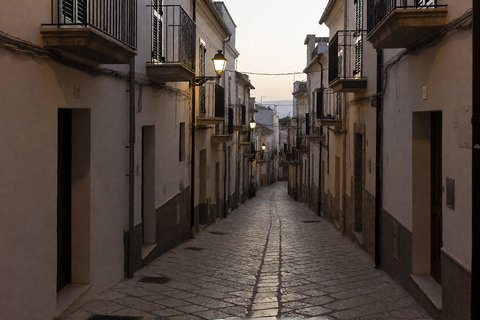
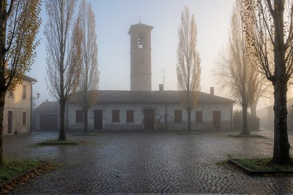
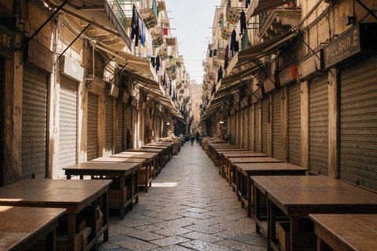
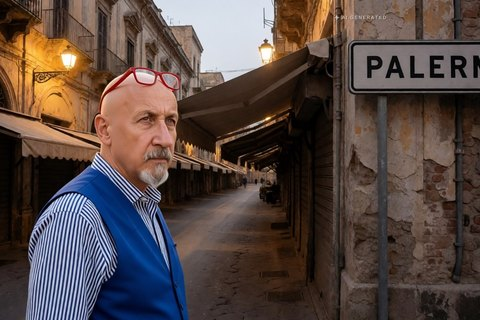
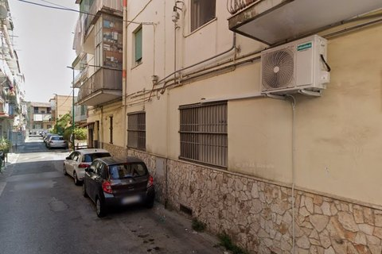
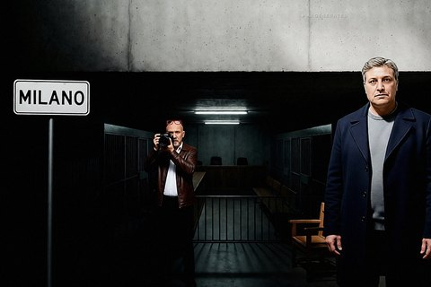

Cronaca · 16 novembre 2026

L'ex capo della Polizia ha ricevuto un avviso di garanzia dalla Procura nissena. Secondo l'accusa avrebbe ostacolato il pentito Contorno e fatto sparire documenti. Nei prossimi giorni l'interrogatorio.
di Franco Zanghì
Sicilia · 16 novembre 2026

Nell'inchiesta antimafia Mercurio l'accusa è di un patto elettorale con la famiglia Santapaola-Ercolano. Arrestato nel 2025, poi scarcerato e tornato all'Assemblea, ora rientra agli arresti.
di Franco Zanghì
Cronaca · 16 novembre 2026
La Procura di Caltanissetta aveva chiesto misure cautelari per l'ex capo della Polizia e per altri quattro. Il giudice ha respinto tutto, i pm hanno fatto appello: ora decide il Riesame.
di Franco Zanghì
Mafia e antimafia · 16 novembre 2026

Diciannove arresti fra Modugno, Bitonto e Altamura. Per la Dda di Bari il gruppo, vicino al clan Capriati, pagava buste paga fittizie per giustificare gli incassi dello spaccio.
di Franco Zanghì
Mafia e antimafia · 13 novembre 2026

La giudice per le indagini preliminari di Milano ha detto no alla richiesta della procura e ha disposto altri sei mesi di accertamenti. Al centro una traccia di sangue repertata nel 1995 vicino al luogo dell'omicidio.
di Franco Zanghì
Mafia e antimafia · 13 novembre 2026

Per la Direzione distrettuale antimafia di Catanzaro sono due delitti di 'ndrangheta. L'accusa: avere fornito le armi, segnalato le vittime e garantito la fuga dopo gli agguati.
di Franco Zanghì
Mafia e antimafia · 13 novembre 2026

La Cassazione chiude il processo Aemilia 92 sui delitti di Reggio Emilia e Brescello: definitivi gli ergastoli per Nicolino Grande Aracri, Angelo Greco e Antonio Ciampà.
di Franco Zanghì
Sicilia · 12 novembre 2026

Tre giorni dopo il funerale che ha fermato il mercato di Ballarò, a Palermo, parla il fratello di Emanuele Rubino: nessuna imposizione ai commercianti, dice, ma un'usanza del quartiere.
di Franco Zanghì
Sicilia · 12 novembre 2026

L'ordinanza, chiesta dalla Direzione distrettuale antimafia, contesta il metodo mafioso e la corruzione di alcuni agenti. Fra i destinatari, a quanto si apprende, anche il cantante neomelodico Niko Pandetta.
di Franco Zanghì
Cronaca · 12 novembre 2026

La Procura di Caltanissetta, che indaga ancora sulle stragi del 1992, ha perquisito Gianni De Gennaro, alcuni suoi collaboratori e il pentito Salvatore Contorno. I magistrati precisano: non è indagato per strage.
di Franco Zanghì
Mafia e antimafia · 11 novembre 2026

Due uomini in carcere per tentata estorsione aggravata dal metodo mafioso: avrebbero chiesto denaro al cantiere del castello di Carlo V e a un'impresa stradale. Un imprenditore non ha pagato e ha fotografato chi lo avvicinava.
di Franco Zanghì
Cronaca · 10 novembre 2026

Tredici misure cautelari della Direzione distrettuale antimafia di Napoli su appalti e tangenti. In carcere anche Tommaso Casillo, che guidava la centrale acquisti della sanità regionale. Il giorno dopo il presidente Fico riferisce in Consiglio regionale.
di Franco Zanghì
Mafia e antimafia · 10 novembre 2026

L'indagine della Direzione distrettuale antimafia di Catania documenta per la prima volta un gruppo mafioso fra Cesarò e San Teodoro. Circa trenta le vittime fra allevatori e imprenditori agricoli.
di Franco Zanghì
Sicilia · 9 novembre 2026

A Palermo il mercato storico chiude le saracinesche al passaggio del feretro di un uomo condannato per tentato omicidio ed estorsione. Nei due giorni successivi parlano l'arcivescovo, la Regione e i residenti di via Maqueda.
di Franco Zanghì
Mafia e antimafia · 7 novembre 2026

Nell'appello bis la Corte d'appello di Reggio Calabria assolve l'ex consigliere regionale e il fratello Antonino dall'accusa di scambio elettorale politico-mafioso. La sentenza non è definitiva: le motivazioni entro novanta giorni.
di Franco Zanghì
Mafia e antimafia · 6 novembre 2026

La gip di Catanzaro revoca la misura disposta il 28 ottobre nell'inchiesta antimafia sulla Sibaritide. Il sindaco, accusato di scambio elettorale politico-mafioso, resta indagato. Le motivazioni non sono ancora pubbliche.
di Franco Zanghì
Mafia e antimafia · 6 novembre 2026

La gup di Palermo chiude il troncone sul mandamento del centro storico: oltre trecento anni di carcere, la pena più alta a vent'anni. Fra i condannati anche familiari dei boss, accusati di ricettazione per gli stipendi del clan.
di Franco Zanghì
Mafia e antimafia · 4 novembre 2026

La Squadra mobile di Napoli esegue ventotto custodie in carcere contro tre gruppi del quartiere. Lo stesso giorno il procuratore annuncia che quasi 1.500 richieste di misura cautelare attendono un giudice: a dicembre saranno duemila.
di Franco Zanghì
Mafia e antimafia · 2 novembre 2026

La Corte d'appello di Palermo conferma le pene del primo grado, fino a 29 anni. Dodici anni e un mese all'ex ispettore di polizia Filippo Pitruzzella, accusato di aver passato notizie riservate: lui sostiene di aver finto per arrivare a Messina Denaro. La sentenza non è definitiva.
di Franco Zanghì
Mafia e antimafia · 28 ottobre 2026

Nell'aula bunker di Milano l'uomo che per i pm teneva insieme Cosa nostra, 'ndrangheta e camorra ha cambiato avvocato e ha deciso di collaborare. È il sesto pentito del processo.
di Franco Zanghì